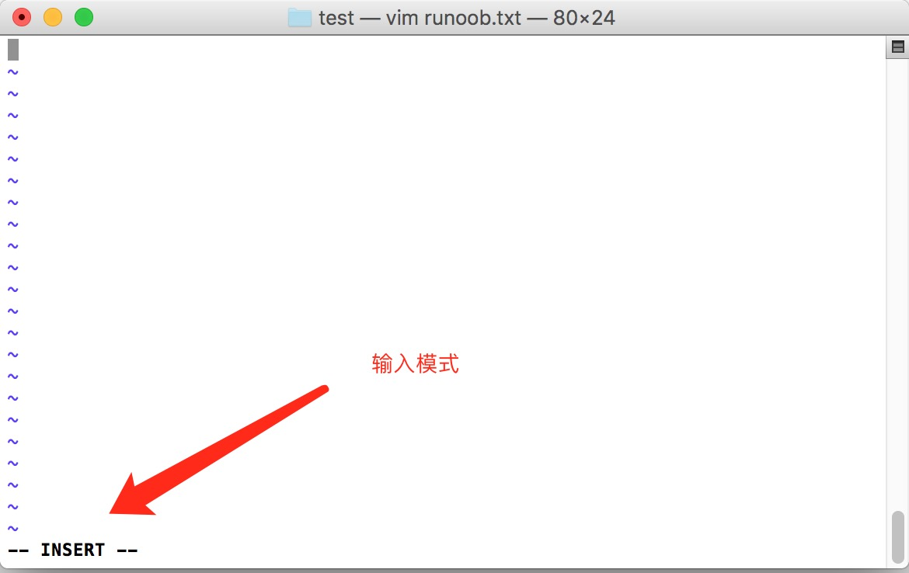

20180622 Linux vi vim
所有的 Unix Like 系统都会内建 vi 文书编辑器，其他的文书编辑器则不一定会存在。
但是目前我们使用比较多的是 vim 编辑器。
vim 具有程序编辑的能力，可以主动的以字体颜色辨别语法的正确性，方便程序设计。
什么是 vim？
Vim是从 vi 发展出来的一个文本编辑器。代码补完、编译及错误跳转等方便编程的功能特别丰富，在程序员中被广泛使用。
简单的来说， vi 是老式的字处理器，不过功能已经很齐全了，但是还是有可以进步的地方。 vim 则可以说是程序开发者的一项很好用的工具。
连 vim 的官方网站 (http://www.vim.org) 自己也说 vim 是一个程序开发工具而不是文字处理软件。
vim 键盘图：

vi/vim 的使用
基本上 vi/vim 共分为三种模式，分别是命令模式（Command mode），输入模式（Insert mode）和底线命令模式（Last line mode）。 这三种模式的作用分别是：
命令模式：
用户刚刚启动 vi/vim，便进入了命令模式。
此状态下敲击键盘动作会被Vim识别为命令，而非输入字符。比如我们此时按下i，并不会输入一个字符，i被当作了一个命令。
以下是常用的几个命令：
- i 切换到输入模式，以输入字符。
- x 删除当前光标所在处的字符。
- : 切换到底线命令模式，以在最底一行输入命令。
若想要编辑文本：启动Vim，进入了命令模式，按下i，切换到输入模式。
命令模式只有一些最基本的命令，因此仍要依靠底线命令模式输入更多命令。
输入模式
在命令模式下按下i就进入了输入模式。
在输入模式中，可以使用以下按键：
- 字符按键以及Shift组合，输入字符
- ENTER，回车键，换行
- BACK SPACE，退格键，删除光标前一个字符
- DEL，删除键，删除光标后一个字符
- 方向键，在文本中移动光标
- HOME/END，移动光标到行首/行尾
- Page Up/Page Down，上/下翻页
- Insert，切换光标为输入/替换模式，光标将变成竖线/下划线
- ESC，退出输入模式，切换到命令模式
底线命令模式
在命令模式下按下:（英文冒号）就进入了底线命令模式。
底线命令模式可以输入单个或多个字符的命令，可用的命令非常多。
在底线命令模式中，基本的命令有（已经省略了冒号）：
- q 退出程序
- w 保存文件
按ESC键可随时退出底线命令模式。
简单的说，我们可以将这三个模式想成底下的图标来表示：

vi/vim 使用实例
使用 vi/vim 进入一般模式
如果你想要使用 vi 来建立一个名为 test.txt 的文件时，你可以这样做：
$ vi runoob.txt
直接输入 vi 文件名 就能够进入 vi 的一般模式了。请注意，记得 vi 后面一定要加文件名，不管该文件存在与否！

按下 i 进入输入模式(也称为编辑模式)，开始编辑文字
在一般模式之中，只要按下 i, o, a 等字符就可以进入输入模式了！
在编辑模式当中，你可以发现在左下角状态栏中会出现 –INSERT- 的字样，那就是可以输入任意字符的提示。
这个时候，键盘上除了 Esc 这个按键之外，其他的按键都可以视作为一般的输入按钮了，所以你可以进行任何的编辑。

按下 ESC 按钮回到一般模式
好了，假设我已经按照上面的样式给他编辑完毕了，那么应该要如何退出呢？是的！没错！就是给他按下 Esc 这个按钮即可！马上你就会发现画面左下角的 – INSERT – 不见了！
在一般模式中按下 :wq 储存后离开 vi
OK，我们要存档了，存盘并离开的指令很简单，输入 :wq 即可保存离开！
OK! 这样我们就成功创建了一个 runoob.txt 的文件。

vi/vim 按键说明
除了上面简易范例的 i, Esc, :wq 之外，其实 vim 还有非常多的按键可以使用。
第一部份：一般模式可用的光标移动、复制粘贴、搜索替换等
| 移动光标的方法 | |
|---|---|
| h 或 向左箭头键(←) | 光标向左移动一个字符 |
| j 或 向下箭头键(↓) | 光标向下移动一个字符 |
| k 或 向上箭头键(↑) | 光标向上移动一个字符 |
| l 或 向右箭头键(→) | 光标向右移动一个字符 |
| 如果你将右手放在键盘上的话，你会发现 hjkl 是排列在一起的，因此可以使用这四个按钮来移动光标。 如果想要进行多次移动的话，例如向下移动 30 行，可以使用 "30j" 或 "30↓" 的组合按键， 亦即加上想要进行的次数(数字)后，按下动作即可！ | |
| [Ctrl] + [f] | 屏幕『向下』移动一页，相当于 [Page Down]按键 (常用) |
| [Ctrl] + [b] | 屏幕『向上』移动一页，相当于 [Page Up] 按键 (常用) |
| [Ctrl] + [d] | 屏幕『向下』移动半页 |
| [Ctrl] + [u] | 屏幕『向上』移动半页 |
| + | 光标移动到非空格符的下一行 |
| - | 光标移动到非空格符的上一行 |
| n |
那个 n 表示『数字』，例如 20 。按下数字后再按空格键，光标会向右移动这一行的 n 个字符。例如 20<space> 则光标会向后面移动 20 个字符距离。 |
| 0 或功能键[Home] | 这是数字『 0 』：移动到这一行的最前面字符处 (常用) |
| $ 或功能键[End] | 移动到这一行的最后面字符处(常用) |
| H | 光标移动到这个屏幕的最上方那一行的第一个字符 |
| M | 光标移动到这个屏幕的中央那一行的第一个字符 |
| L | 光标移动到这个屏幕的最下方那一行的第一个字符 |
| G | 移动到这个档案的最后一行(常用) |
| nG | n 为数字。移动到这个档案的第 n 行。例如 20G 则会移动到这个档案的第 20 行(可配合 :set nu) |
| gg | 移动到这个档案的第一行，相当于 1G 啊！ (常用) |
| n |
n 为数字。光标向下移动 n 行(常用) |
| 搜索替换 | |
| /word | 向光标之下寻找一个名称为 word 的字符串。例如要在档案内搜寻 vbird 这个字符串，就输入 /vbird 即可！ (常用) |
| ?word | 向光标之上寻找一个字符串名称为 word 的字符串。 |
| n | 这个 n 是英文按键。代表重复前一个搜寻的动作。举例来说， 如果刚刚我们执行 /vbird 去向下搜寻 vbird 这个字符串，则按下 n 后，会向下继续搜寻下一个名称为 vbird 的字符串。如果是执行 ?vbird 的话，那么按下 n 则会向上继续搜寻名称为 vbird 的字符串！ |
| N | 这个 N 是英文按键。与 n 刚好相反，为『反向』进行前一个搜寻动作。 例如 /vbird 后，按下 N 则表示『向上』搜寻 vbird 。 |
| 使用 /word 配合 n 及 N 是非常有帮助的！可以让你重复的找到一些你搜寻的关键词！ | |
| :n1,n2s/word1/word2/g | n1 与 n2 为数字。在第 n1 与 n2 行之间寻找 word1 这个字符串，并将该字符串取代为 word2 ！举例来说，在 100 到 200 行之间搜寻 vbird 并取代为 VBIRD 则： 『:100,200s/vbird/VBIRD/g』。(常用) 注意： [100,200] 是包含当前所在行的 |
| :1,$s/word1/word2/g | 从第一行到最后一行寻找 word1 字符串，并将该字符串取代为 word2 ！(常用) |
| :1,$s/word1/word2/gc | 从第一行到最后一行寻找 word1 字符串，并将该字符串取代为 word2 ！且在取代前显示提示字符给用户确认 (confirm) 是否需要取代！(常用) |
| 删除、复制与贴上 | |
| x, X | 在一行字当中，x 为向后删除一个字符 (相当于 [del] 按键)， X 为向前删除一个字符(相当于 [backspace] 亦即是退格键) (常用) |
| nx | n 为数字，连续向后删除 n 个字符。举例来说，我要连续删除 10 个字符， 『10x』。 |
| dd | 删除游标所在的那一整行(常用) |
| ndd | n 为数字。删除光标所在的向下 n 行，例如 20dd 则是删除 20 行 (常用) |
| d1G | 删除光标所在到第一行的所有数据 |
| dG | 删除光标所在到最后一行的所有数据 |
| d$ | 删除游标所在处，到该行的最后一个字符 |
| d0 | 那个是数字的 0 ，删除游标所在处，到该行的最前面一个字符 |
| yy | 复制游标所在的那一行(常用) 注意这个是复制到剪切板 MacVim 里用的是 p， 然后在下一行将剪切板里的内容黏贴 |
| nyy | n 为数字。复制光标所在的向下 n 行，例如 20yy 则是复制 20 行(常用) MacVIm 复制20行：20p |
| y1G | 复制游标所在行到第一行的所有数据 |
| yG | 复制游标所在行到最后一行的所有数据 |
| y0 | 复制光标所在的那个字符到该行行首的所有数据 |
| y$ | 复制光标所在的那个字符到该行行尾的所有数据 |
| p, P | p 为将已复制的数据在光标下一行贴上，P 则为贴在游标上一行！ 举例来说，我目前光标在第 20 行，且已经复制了 10 行数据。则按下 p 后， 那 10 行数据会贴在原本的 20 行之后，亦即由 21 行开始贴。但如果是按下 P 呢？ 那么原本的第 20 行会被推到变成 30 行。 (常用) |
| J | 将光标所在行与下一行的数据结合成同一行 |
| c | 重复删除多个数据，例如向下删除 10 行，[ 10cj ] |
| u | 撤回，复原前一个动作。(常用) |
| [Ctrl]+r | 重做， 重做上一个动作。(常用) |
| 这个 u 与 [Ctrl]+r 是很常用的指令！一个是复原，另一个则是重做一次～ 利用这两个功能按键，你的编辑，嘿嘿！很快乐的啦！ | |
| . | 不要怀疑！这就是小数点！意思是重复前一个动作的意思。 如果你想要重复删除、重复贴上等等动作，按下小数点『.』就好了！ (常用) 重复上一条指令(略微有点强大) |
第二部份：一般模式切换到编辑模式的可用的按钮说明
| 进入输入或取代的编辑模式 | |
|---|---|
| i, I | 进入输入模式(Insert mode)： i 为『从目前光标所在处输入』， I 为『在目前所在行的第一个非空格符处开始输入』。 (常用) |
| a, A | 进入输入模式(Insert mode)： a 为『从目前光标所在的下一个字符处开始输入』， A 为『从光标所在行的最后一个字符处开始输入』。(常用) |
| o, O | 进入输入模式(Insert mode)： 这是英文字母 o 的大小写。o 为『在目前光标所在的下一行处输入新的一行』； O 为在目前光标所在处的上一行输入新的一行！(常用) |
| r, R | 进入取代模式(Replace mode)： r 只会取代光标所在的那一个字符一次；R会一直取代光标所在的文字，直到按下 ESC 为止；(常用) |
| 上面这些按键中，在 vi 画面的左下角处会出现『--INSERT--』或『--REPLACE--』的字样。 由名称就知道该动作了吧！！特别注意的是，我们上面也提过了，你想要在档案里面输入字符时， 一定要在左下角处看到 INSERT 或 REPLACE 才能输入喔！ | |
| [Esc] | 退出编辑模式，回到一般模式中(常用) |
第三部份：一般模式切换到指令行模式的可用的按钮说明
| 指令行的储存、离开等指令 | |
|---|---|
| :w | 将编辑的数据写入硬盘档案中(常用) |
| :w! | 若文件属性为『只读』时，强制写入该档案。不过，到底能不能写入， 还是跟你对该档案的档案权限有关啊！ |
| :q | 离开 vi (常用) |
| :q! | 若曾修改过档案，又不想储存，使用 ! 为强制离开不储存档案。 |
| 注意一下啊，那个惊叹号 (!) 在 vi 当中，常常具有『强制』的意思～ | |
| :wq | 储存后离开，若为 :wq! 则为强制储存后离开 (常用) |
| ZZ | 这是大写的 Z 喔！若档案没有更动，则不储存离开，若档案已经被更动过，则储存后离开！ |
| :w [filename] | 将编辑的数据储存成另一个档案（类似另存新档） |
| :r [filename] | 在编辑的数据中，读入另一个档案的数据。亦即将 『filename』 这个档案内容加到游标所在行后面 |
| :n1,n2 w [filename] | 将 n1 到 n2 的内容储存成 filename 这个档案。 |
| :! command | 暂时离开 vi 到指令行模式下执行 command 的显示结果！例如 『:! ls /home』即可在 vi 当中察看 /home 底下以 ls 输出的档案信息！ |
| vim 环境的变更 | |
| :set nu | 显示行号，设定之后，会在每一行的前缀显示该行的行号 |
| :set nonu | 与 set nu 相反，为取消行号！ |
特别注意，在 vi/vim 中，数字是很有意义的！数字通常代表重复做几次的意思！ 也有可能是代表去到第几个什么什么的意思。
举例来说，要删除 50 行，则是用 『50dd』 对吧！ 数字加在动作之前，如我要向下移动 20 行呢？那就是『20j』或者是『20↓』即可。
VIM 常用
1- “打开最近一个文件” 不太好用。
2- 显示缓冲区内打开的文件：
:ls # 如果是系统命令，就应该是 :! ls
# 看到编号之后， 可以在指定分屏的窗口打开文件
:e # 1 # 打开编号为 1 的文件
打开多个文件
方法一： 在shell 中打开多个文件
vim file1 file2
打开文件并水平窗口显示
vim -o file1 file2
打开文件并垂直方式显示
vim -O p1.sh p2.sh
在终端里输入 vim file1 file2 ... filen便可以打开所有想要打开的文件
方法二：在vim中打开新文件
原窗口打开新文件
:open file
:e ../myFile.pl
- vim 文档名 普通方式打开文档
- vim +n 文档名 打开文档后，定位第n行
- vim ，进入vim界面之后使用命令 :e 文档名 打开文档，此方式可以在编辑一个文档的同时打开另外一个文档
多窗口打开
:split 简写 :sp :vsplit 简写 :vsp 【垂直复制本文件的内容】
# 显示缓存 :ls
:vs 文件路径/文件名 在新的垂直分屏中打开文件
:sv 文件路径/文件名 在新的水平分屏中打开文件
文件间切换（一个窗口，但是打开了多个文件）
Ctrl+6—下一个文件【不管用】
:bn—下一个文件
:bp—上一个文件
同时打开了多个窗口切换
对于用(v)split在多个窗格中打开的文件，这种方法只会在当前窗格中切换不同的文件。
Ctrl+w+方向键——切换到前／下／上／后一个窗格
Ctrl+w+h/j/k/l ——同上
Ctrl+ww——依次向后切换到下一个窗格中
在多个个文件之间复制
1.在第一个文件中使用可视模式，就是VISUAL，然后选中要复制的文本，执行命令 "+y,或者“*y这就把内容复制到剪贴板。这里可以三个字符，而且一定要在可视化模式中，并存选中你要复制的代码以后，输入上面的命令，这时在VIM中的下面并不显示你输入的这条命令。
2.在另一个文件中，执行命令"+p,或者"*p。就能复制过来，＋指的是寄存器的意思,似乎也是操作系统的剪贴板，复制了之后，在别的地方，例如文本文件里就可以用ctrl＋v了。这里也是在可视模式下，不需要输入冒号：，这里输入的命令也是看不到的。
关闭文件
单个文件 ：:q 就可以了
关闭所有： :qa
多文档编辑的命令
:n 编辑下一个文档。 :2n 编辑下两个文档。 :N 编辑上一个文档。注意，该方法只能用于同时打开多个文档。 :e 文档名 这是在进入vim后，不离开 vim 的情形下打开其他文档。 :e# 或 Ctrl+ˆ 编辑上一个文档,用于两个文档相互交换编辑时使用。?# 代表的是编辑前一次编辑的文档 :files 或 :buffers 或 :ls 可以列出目前 缓冲区 中的所有文档。加号 + 表示 缓冲区已经被修改过了。＃代表上一次编辑的文档，%是目前正在编辑中的文档 :b 文档名或编号 移至该文档。 :f 或 Ctrl+g 显示当前正在编辑的文档名称。 :f 新文件名 改变编辑中的文档名。(file)
多文件切换
- 通过vim打开多个文件（可以通过ctags或者cscope）
- ":ls"查看当前打开的buffer（文件）
- ":b num"切换文件（其中num为buffer list中的编号）